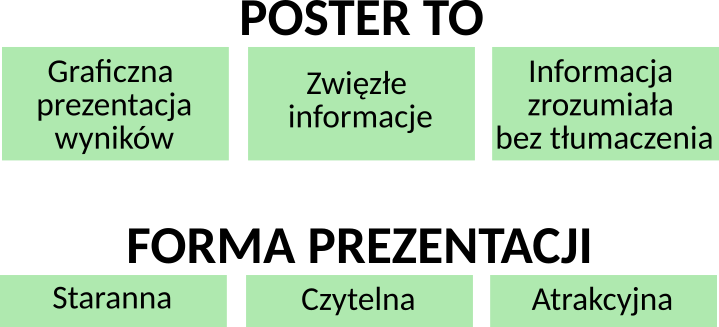
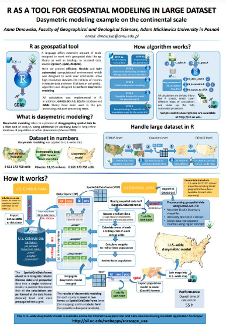
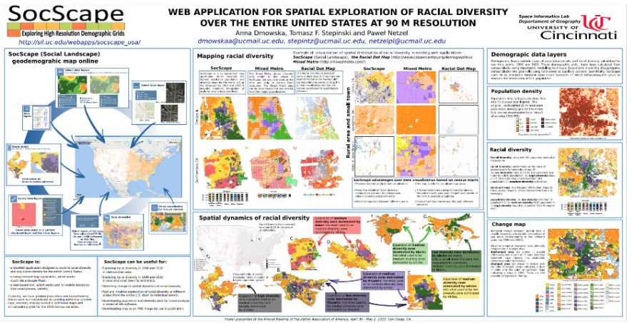
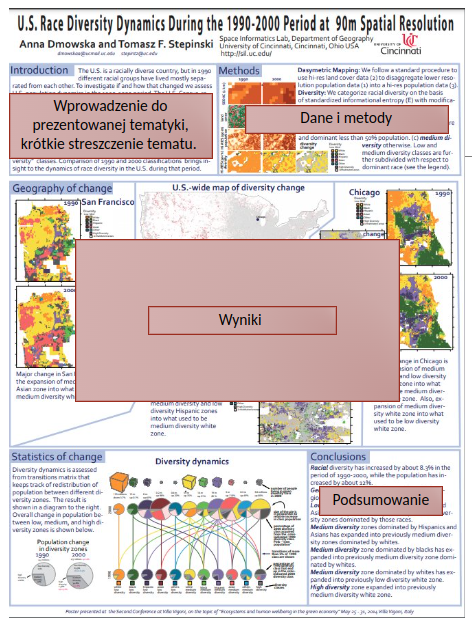

7 Poster naukowy
Postery są powszechnie używaną graficzną formą prezentacji wyników.
Zadaniem posterów nie jest szczegółowa prezentacja wyników.
Zadaniem posteru jest przybliżenie wyników szerszej publiczności w prostej i ciekawej formie, która ma zachęcić do dyskusji.
Poster powinien przyciągać uwagę potencjalnych czytelników oraz zachęcać do dyskusji.
Poster musi być zrozumiały bez jego dodatkowego tłumaczenia
- czytelnik powinien być w stanie zrozumieć, w jaki sposób doszedłeś do swoich wniosków i dlaczego bez dodatkowego tłumaczenia
7.1 Forma prezentacji
Poster to graficzna forma prezentacji wyników.
- Istotą posteru jest przekazanie informacji za pomocą obrazów
- Tekst na posterze ogranicza się do minimum i zastępuje się go schematami, diagramami, wykresami, albo tabelami
- Wizualizacje powinny być wykorzystywane do przyciągnięcia uwagi grupy ludzi.
- Ograniczona liczba słów i dobra grafika

7.2 Projektowanie posteru - jak zacząć?
Jakie jest najważniejsze/ najciekawsze / najbardziej zadziwiające odkrycie w moim projekcie badawczym?
Jak mogę wizualnie udostępnić moje badania innym uczestnikom (np. konferencji)? Czy powinnam używać wykresów, rysunków, fotografii, schematów?
Jakie informacje mogę przekazać podczas krótkiego, 5 minutowego omówienia posteru?
7.3 Postery naukowe - przykłady


7.4 Jak wygląda poster?
7.4.1 Projektowanie posteru:
7.4.2 Struktura i układ posteru
Poster jest zazwyczaj wykonywane w formacie A1 lub A0 - poziomy lub pionowy
Układ i przemyślana struktura jest bardzo ważna
- Ważne jest przemyślane rozmieszczenie bloków tekstu i grafik, odpowiednie, umiejscowienie tytułu. Nie zapominaj także o autorach posteru.
- Proponowana struktura: 20% tekstu, 20% ilustracji, 40% białych przestrzeni
Poster naukowy zawiera: tytuł i autorów, wstęp, cel badań, metody, wyniki i wnioski.
- Tytuł: krótki, angażujący, wzbudzający zainteresowanie, widoczny z odległości 3-4m
- Autorzy: uwzględnienie imienia, nazwiska oraz afiliacji autora (zazwyczaj zaraz pod tytułem, nieco mniejszą czcionką)
- Wstęp: zwięzły, ale równocześnie dobrze wyjaśniający cel badań
- Metodyka: przedstawiona zazwyczaj w sposób skrótowy
- Opis wyników jest zwykle ilustrowany oraz wyposażony w schematy.
- Wnioski: prezentowane schematycznie, na przykład wypunktowane.

7.4.3 Tekst
Ile tekstu powinno być na postrze? - Niewiele (im mniej tym lepiej).
Tekst nie powinien przekraczać 1000 słów (tj. 1,5 strony A4).
- 1000 słów zapewni wystarczające wyjaśnienie tematu, i zostawi odpowiednio dużo miejsca na grafiki.
Bloki “litego” tekstu nie powinny być zbyt szerokie i zbyt duże.
Zachowaj prostotę i wyeliminuj wszelkie informacje, które nie są konieczne.
Unikaj pisania w akapitach, używaj wypunktowań.
7.4.4 Ilustracje i grafiki
- Ilustracje, mapy są konieczne.
- Ilustracje, grafiki i tabele to elementy, które najbardziej przykuwają wzrok. Elementy te powinny być jasne i zrozumiałe dla każdego, ważne są tytuły (nad nimi) i źródła (pod nimi).
- Zamiast tabel, zazwyczaj lepszym wyborem są wykresy
- Zdjęcia dobrze wyglądają w obramowaniu, natomiast wykresy już nie
Poster to graficzna prezentacja wyników badań. Ilustracje, grafiki, wykresy, mapy:
- powinny być odpowiednio duże i czytelne (tj. wyraźnie widoczne z odległości min. 1m)
- powinny być proste i nieskomplikowane
- powinny wyjaśniać złożony tekst
7.4.5 Czcionka
Czcionka musi być prosta i odpowiednio duża - poster ma być czytelny także z daleka.
- w tekście głównym powinno się używać czcionki szeryfowej - jest ona łatwiejsza do odczytania po wydruku
- nie używać zbyt wielu krojów i wielkości czcionek
Krój i wielkość czcionki powinna być widoczna z odległości 1,5-2 m:
- Tekst główny: czcionka nie mniejsza niż 18-28 pkt,
- Tytuł: 70-140 pkt (powinien być widoczny z odległości 3-4m)
- Nagłówki 36-60 pkt
- Czcionka na rycinach: przynajmniej 14-16 pkt
7.4.6 Kolory
- Kolor jest elementem przyciągającym uwagę czytelnika.
- Kolor ma zwiększać czytelność tekstu.
- Wybieraj jasne, gładkie i neutralne kolory tła. Ciemne tło nie jest najlepszym rozwiązaniem
- Jasne tło powoduje, że tekst jest bardziej widoczny.
- Tekst główny powinien być czarny. Nagłówki mogą być w innym kolorze.
7.4.7 Język
prosty i pozbawiony błędów
- Należy zadbać o poprawność językową (ortografia, interpunkcja, stylistyka)
7.5 Druk posteru
Przed wykonaniem ostatecznego wydruku:
wydrukuj kopię A4 przed wydrukowaniem końcowego posteru
sprawdzić poster pod względem merytorycznym:
- czy zostały uwzględnione wszystkie najważniejsze zagadnienia?
- czy ryciny są właściwie opisane?
- czy poster został prawidłowo skomponowany?
dokładnie sprawdź poster pod kątem błędów, nietypowych symboli, czcionek
- czy w tekście nie ma błędów stylistycznych, ortograficznych, czy tzw. literówek
7.6 Dobry poster, czyli jaki?
- Ważne informacje powinny być czytelne z odległości 2-3 metrów.
- Tytuł jest krótki i wzbudza zainteresowanie
- Przewaga ilustracji nad tekstem.
- Tekst przejrzysty, na temat – 300-800 słów, nie więcej niż 1000 słów (1,5 strony A4).
- Użycie wypunktowania, numeracji i nagłówków ułatwia czytanie
- Efektywne wykorzystanie grafiki, kolorów i czcionek
- Spójny i czysty układ
- Jak wygląda dobry i zły poster? https://guides.nyu.edu/posters
7.7 Najczęstsze błędy
- za wiele informacji
- za dużo detali na wykresach, mapach, ilustracjach
- za dużo tekstu
- za małe marginesy dla tekstu
- zbyt grube ramki wokół tekstu
- za długi tytuł
- za mała czcionka
- nieodpowiednie marginesy: za mało przestrzeni między tektem a grafikami